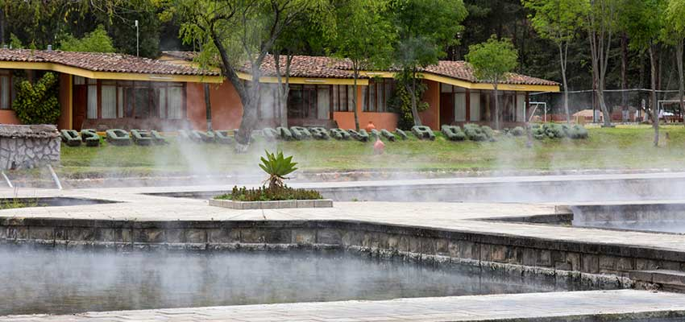
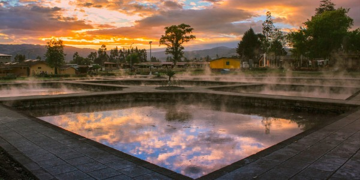
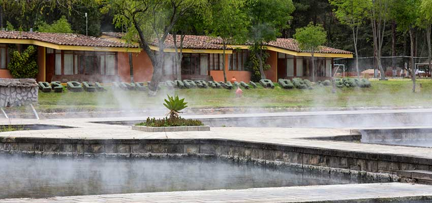
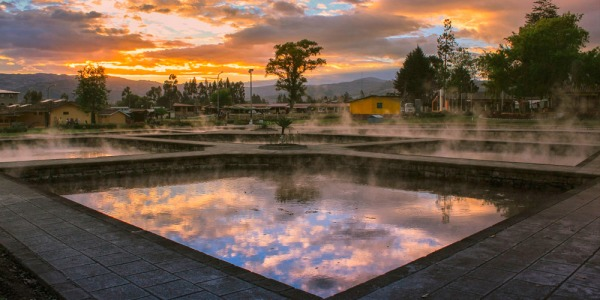
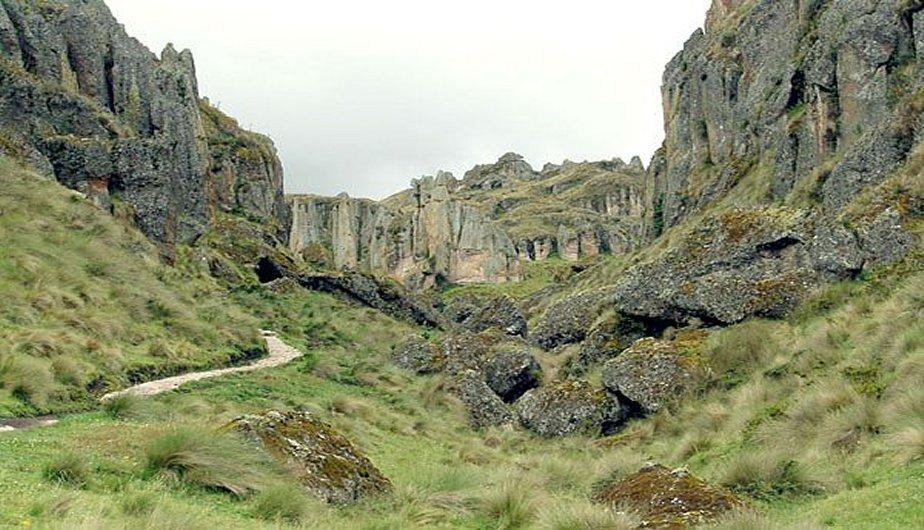
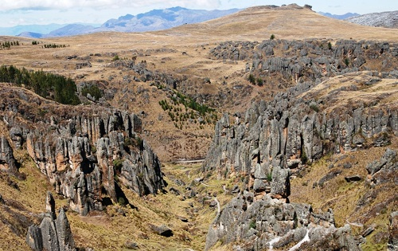
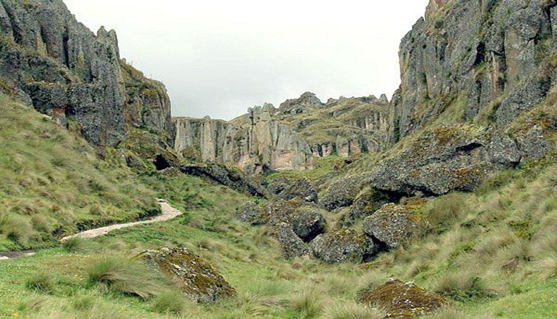
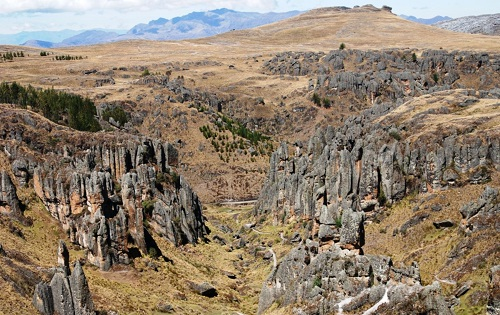

Turismo Cajamarca
Reseña histórica
La bella Cajamarca es considerada Patrimonio Histórico y Cultural de las Américas, pues además de sus maravillosos paisajes, fue escenario de importantes eventos históricos. Tiempo antes de la conquista de los Incas, existió en estas tierras una legendaria cultura, Caxamarca, descubierta por el célebre arqueólogo Julio C.Tello, cuyo principal legado como cultura son más de 90 sitios arqueológicos.
Cajamarca (en quechua: Kashamarka
, pueblo de espinas; Fundada: San Antonio de Cajamarca ) es una ciudad del norte del Perú, capital del Departamento y de la Provincia de Cajamarca, situada a 2720 msnm en la vertiente
oriental de la Cordillera de los Andes, en la sierra norte del país. El sitio de Cajamarca ha sido habitado con anterioridad durante la era incaica, durante la cual ya era un centro poblado importante. En 1532, se produjo en
este lugar la captura de Atahualpa durante la conquista del Perú. En la época de la colonia mantuvo su categoría de villa hasta el 19 de diciembre de 1802, poco antes de la Independencia cuando fue fundada como ciudad y recibió
su escudo de armas.
Principales lugares turísticos
-
Baños del inca
-
Cumbemayo
Es un balneario medicinal que atrae a turistas nacionales e internacionales. Sus aguas alcanzan temperaturas de 72 °C (158 °F) y contienen sodio, hierro, magnesio, potasio, calcio, litio, estroncio y sílice. Por estas propiedades químicas ayudan al tratamiento de enfermedades reumáticas, bronquiales, nerviosas y de la piel. Asimismo, los Baños del Inca ofrecen el servicio de pozas colectivas, pozas individuales, piscinas al aire libre, servicios de masajes, baños sauna que incluyen tratamientos con eucalipto, entre otros. Relajarse en estas aguas terapéuticas es un placer inolvidable.
 



Descubierto en 1937, está rodeado por un interesante bosque de piedras que parecen reproducir las siluetas de piadosos frailes (por lo que familiarmente se les denomina frailones
). Además, destacan el Acueducto
(1000 a.C.), singular obra de ingeniería hidráulica; el denominado Santuario, farallón con apariencia de una gigantesca cabeza humana; y Las Cuevas, donde existen grabados o petroglifos.
 



Datos adicionales
| Ubicación | |
|---|---|
| Lugar turístico | Distancia desde la ciudad de Cajamarca |
| Baños del inca | 6 km al este |
| Cumbemayo | 20 km al suroeste |